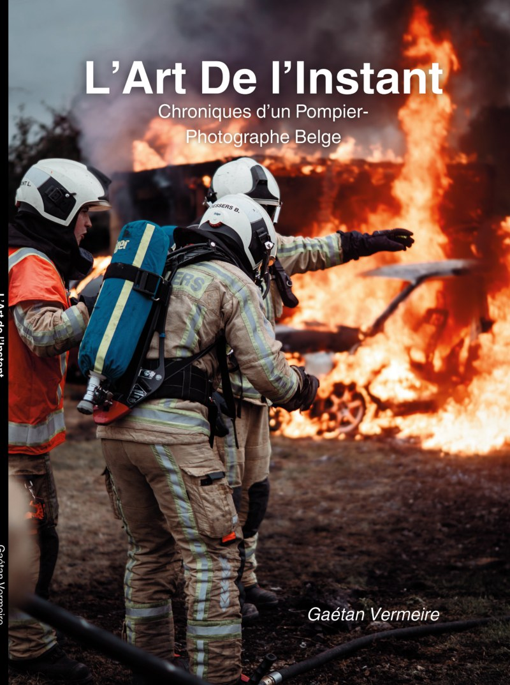
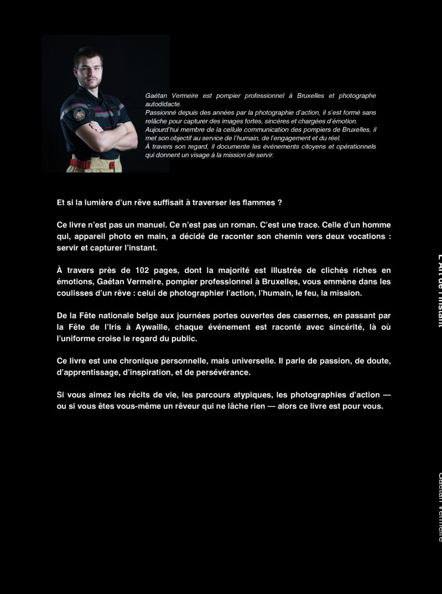
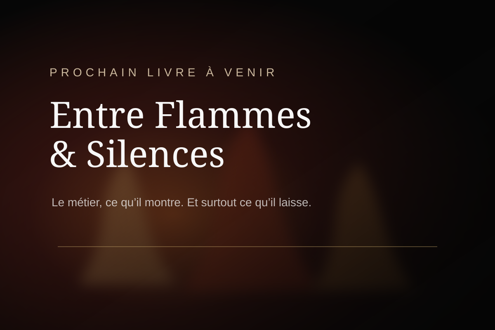
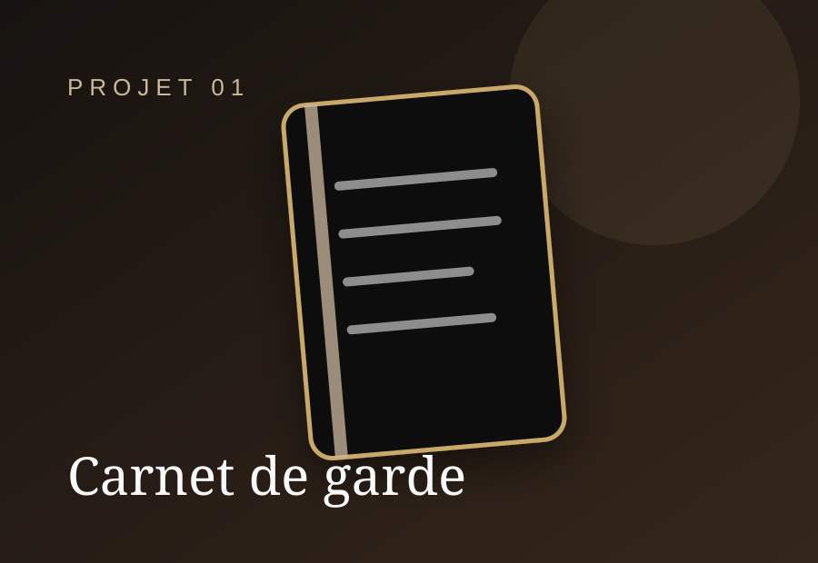
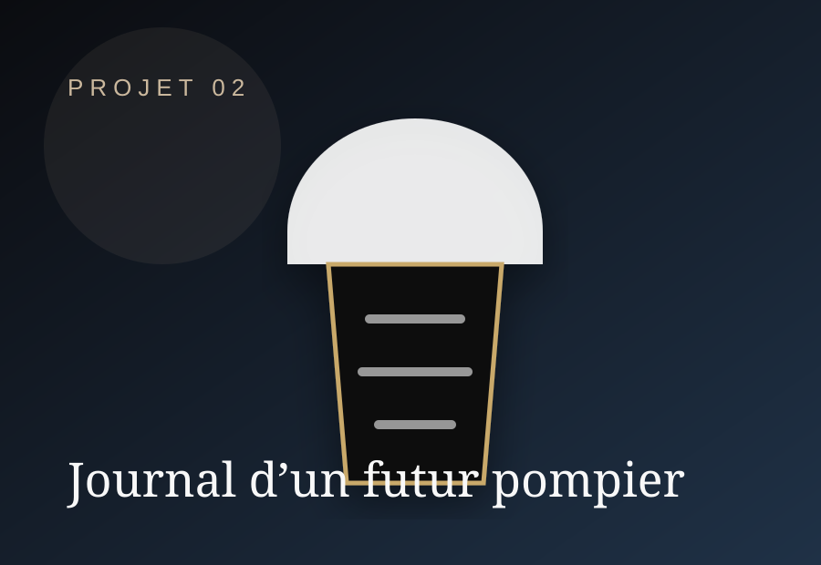

Livre disponible
L’Art de l’Instant
Chronique d’un pompier-photographe belge. Un récit visuel et humain né entre intervention, lumière et silence.


Disponible à l’achat
L’Art de l’Instant
Choisis la langue du livre, puis ton pays Amazon. Le site ouvre le bon lien d’achat.

Prochain livre à venir
Entre Flammes & Silences
Un projet plus immersif, centré sur ce que le métier laisse derrière lui : les gestes, les silences, les souvenirs et ce qu’on ne montre presque jamais.
À venir
Projets éditoriaux
Des supports pensés pour transmettre, raconter et accompagner celles et ceux qui s’intéressent au monde pompier.

Carnet de garde
Un carnet pour garder une trace des gardes, interventions, apprentissages et réflexions.

Journal d’un futur pompier
Un support pour accompagner les candidats dans leur préparation, discipline et motivation.